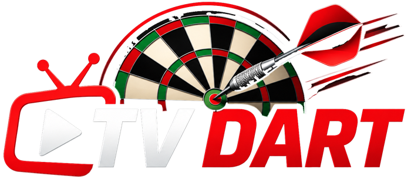

Który turniej pokazuje telewizor
Wczytuję…
Wystarczy skopiować adres strony turnieju z Nakka (dowolna zakładka).
Gdy turniej się skończy, ekran sam pokaże podium, finał i wyróżnienia, a ten napis będzie się przewijał na dole.
„Wyczyść ekran” – telewizor pokaże komunikat „Brak wybranego turnieju”.